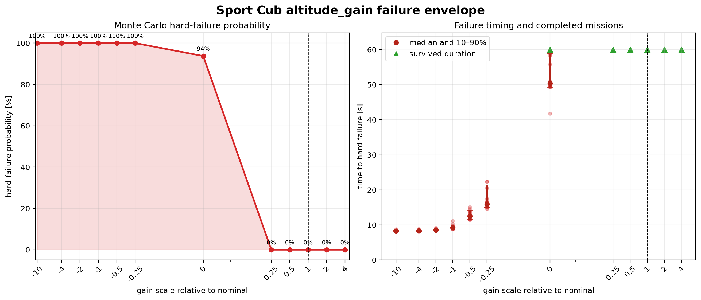

Autopilot crash
FixedWingOuterLoop.K_h polarity and loss
Every negative K_h crashed, from −10× (K_h = −20) to −0.25× (K_h = −0.5). Zero gain (K_h = 0) crashed 15/16 nominal-altitude trials near 50 seconds; nominal feedback is K_h = 2.0.

K_h = 2.0 (scale 1×). Inference: Negative polarity is uniformly fatal; scale 0 fails late in 15/16 trials; every tested positive scale survives.